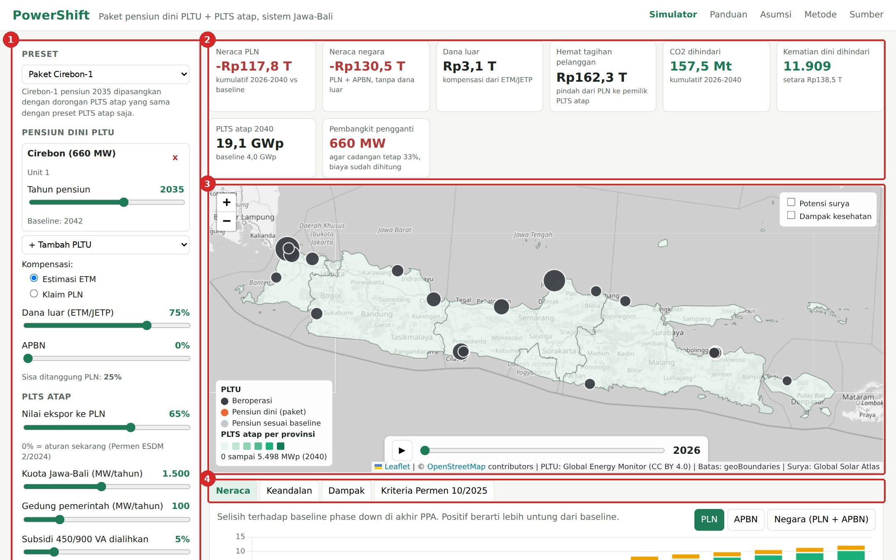
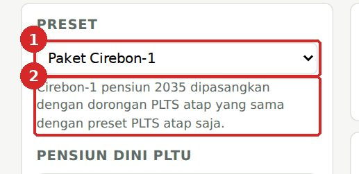
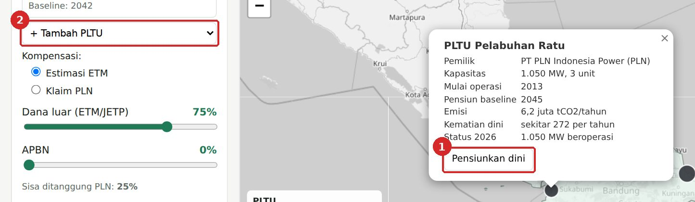
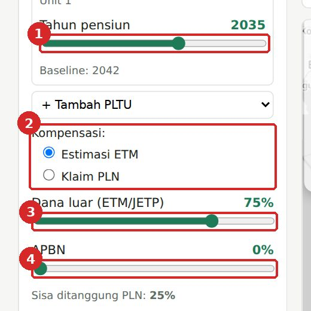
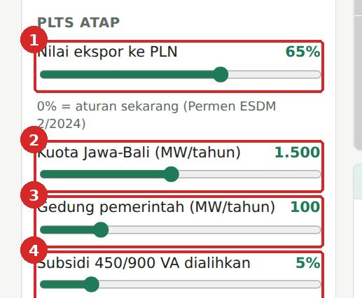
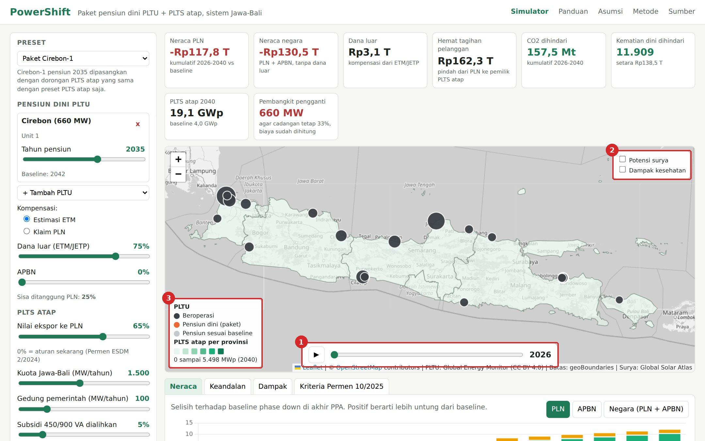
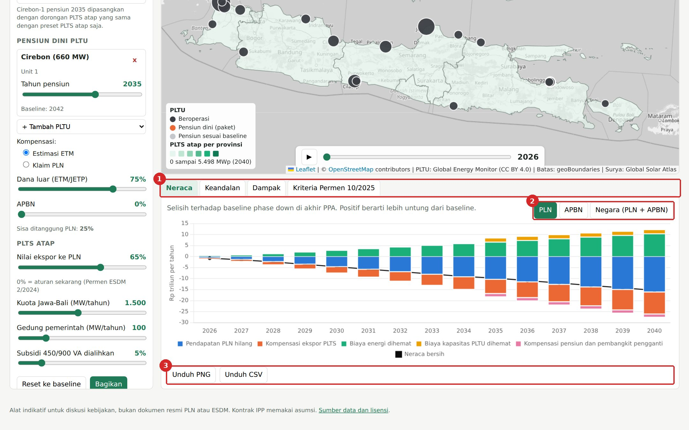
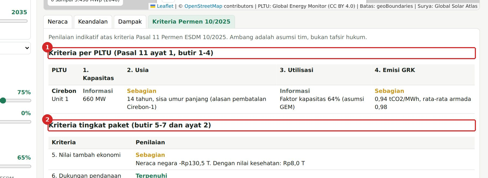
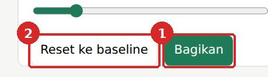

Panduan Penggunaan
PowerShift menghitung dampak paket pensiun dini PLTU dan PLTS atap di sistem listrik Jawa-Bali, tahun 2026 sampai 2040. Semua angka uang dan dampak adalah selisih terhadap baseline: PLTU pensiun di akhir kontrak (phase down) dan PLTS atap tumbuh dengan aturan sekarang. Kotak merah bernomor pada gambar menunjukkan bagian yang diklik atau dibaca.
1. Bagian layar

- Panel paket kebijakan. Tempat memilih preset, PLTU yang dipensiunkan, sumber dana, dan kebijakan PLTS atap.
- Kartu angka. Ringkasan hasil kumulatif 2026-2040. Merah berarti lebih buruk dari baseline, hijau berarti lebih baik.
- Peta Jawa-Bali. Titik PLTU dan warna provinsi menurut kapasitas PLTS atap.
- Tab hasil. Grafik neraca, keandalan, dampak, dan penilaian kriteria.
2. Mulai dari preset

- Pilih preset dari menu. Ada lima preset: Phase down PPA (baseline), PLTS atap saja, Pensiun dini saja, Paket Cirebon-1, dan Paket seimbang.
- Baca keterangan preset di bawah menu untuk melihat isi kebijakannya.
Bandingkan "PLTS atap saja" dengan "Paket Cirebon-1" untuk melihat efek memasangkan pensiun dini. "Paket seimbang" adalah kombinasi yang membuat neraca PLN tidak lagi negatif.
3. Memilih PLTU untuk pensiun dini

- Klik titik PLTU di peta, lalu klik Pensiunkan dini pada popup. Popup juga menampilkan pemilik, kapasitas, emisi, dan perkiraan kematian dini.
- Atau pilih dari menu + Tambah PLTU di panel kiri.
PLTU milik IPP menghemat pembayaran kapasitas PLN saat dipensiunkan. PLTU milik PLN tidak, sehingga pensiun dininya cenderung membebani PLN.
4. Tahun pensiun, kompensasi, dan sumber dana

- Geser tahun pensiun tiap PLTU. Batas kanan adalah tahun pensiun baseline. Klik x untuk membatalkan.
- Pilih asumsi kompensasi. Estimasi ETM mengikuti nilai refinancing Cirebon-1 (ADB). Klaim PLN memakai angka Rp60 triliun untuk percepatan lima tahun.
- Atur porsi dana luar (ETM, JETP, dana iklim).
- Atur porsi APBN. Sisanya ditanggung PLN.
5. Kebijakan PLTS atap

- Nilai ekspor ke PLN. 0% adalah aturan sekarang (Permen ESDM 2/2024). Nilai lebih tinggi membuat balik modal lebih cepat dan PLTS atap tumbuh lebih banyak.
- Kuota Jawa-Bali. Batas atas tambahan PLTS atap per tahun.
- Gedung pemerintah. Tambahan PLTS atap wajib di gedung pemerintah. Tagihan yang dihemat kembali ke APBN.
- Subsidi 450/900 VA dialihkan. Porsi subsidi listrik Jawa-Bali yang dipakai untuk memasang PLTS atap rumah tangga bersubsidi.
6. Peta dan perjalanan waktu

- Geser slider tahun atau klik tombol putar untuk melihat perubahan 2026 sampai 2040. PLTU yang pensiun dini berubah jingga, warna provinsi makin gelap saat PLTS atap bertambah.
- Nyalakan lapisan Potensi surya (produksi kWh per kWp per kabupaten) atau Dampak kesehatan (lingkar kematian dini per PLTU).
- Legenda menjelaskan warna titik PLTU dan skala PLTS atap.
7. Membaca neraca dan grafik

- Pilih tab: Neraca (uang), Keandalan (reserve margin dan energi), Dampak (CO2, kematian dini, pekerja), Kriteria.
- Pilih sudut pandang neraca: PLN, APBN, atau Negara (PLN + APBN). Batang di atas nol menguntungkan, di bawah nol merugikan. Garis hitam adalah neraca bersih per tahun.
- Unduh PNG untuk grafik atau Unduh CSV untuk seluruh angka tahunan.
8. Kriteria Permen ESDM 10/2025

- Kriteria per PLTU (kapasitas, usia, utilisasi, emisi) untuk setiap PLTU yang dipilih.
- Kriteria tingkat paket (nilai tambah ekonomi, pendanaan, teknologi, keandalan, dampak tarif, transisi berkeadilan).
Status Terpenuhi, Sebagian, dan Belum bersifat indikatif. Ambangnya adalah asumsi tim, bukan tafsir hukum.
9. Menyimpan dan berbagi skenario

- Bagikan menyalin tautan berisi seluruh pengaturan. Orang yang membuka tautan melihat skenario yang sama.
- Reset ke baseline mengembalikan semua pengaturan.
Istilah
| Istilah | Arti |
|---|---|
| Baseline phase down | PLTU pensiun di akhir PPA (IPP) atau umur desain (PLN), PLTS atap tumbuh dengan aturan sekarang |
| Neraca PLN | Selisih pendapatan dan biaya PLN dibanding baseline, sebelum ditutup APBN |
| Neraca negara | Neraca PLN ditambah pos APBN (subsidi, tagihan gedung pemerintah, kompensasi). Dana luar tidak termasuk |
| Dana luar | Bagian kompensasi pensiun dini dari ETM, JETP, atau dana iklim |
| Hemat tagihan pelanggan | Uang yang tidak lagi dibayar pemilik PLTS atap ke PLN |
| Pembangkit pengganti | Kapasitas baru yang dibutuhkan agar reserve margin tetap 33% setelah PLTU pensiun dini |
| Reserve margin | Kelebihan daya mampu di atas beban puncak, dalam persen |
Rumus dan batasan model ada di halaman Metode. Nilai setiap parameter dan sumbernya ada di halaman Asumsi.